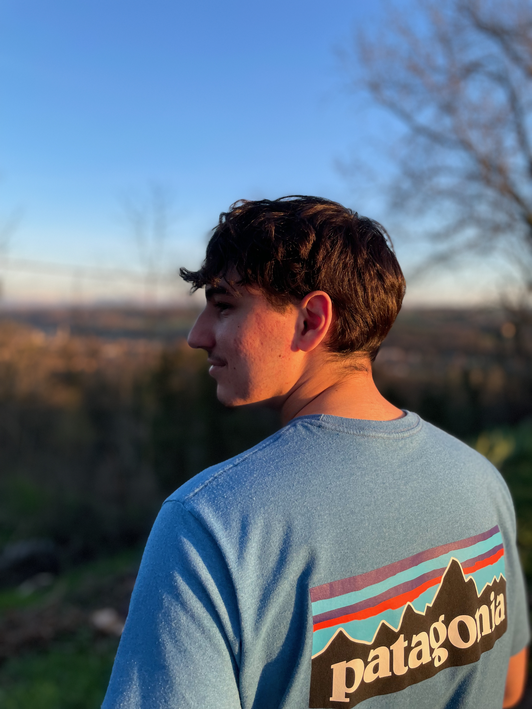

Étudiant en Géomatique et Analyse Spatiale
Je suis actuellement en première année de Master en Géomatique et Analyse Spatiale à l'Institut d'Urbanisme et de Géographie Alpine (IUGA) de Grenoble. Passionné par la cartographie, les systèmes d'information géographique (SIG) et la programmation, je développe des projets mêlant données géographiques et outils numériques. Vous pourrez trouver ici quelques-uns de mes projets académiques.
SIG : QGIS, ArcGIS Pro
Langages : Python, R, Rstudio, SQL
Workflow : FME, Data Interoperability
Télédétection : Orfeo Tool Box, Photoscan
Base de données : PostGIS
Éditeur de SIG : GEO (Business Geographic)
Email : matteo.tournier375@gmail.com